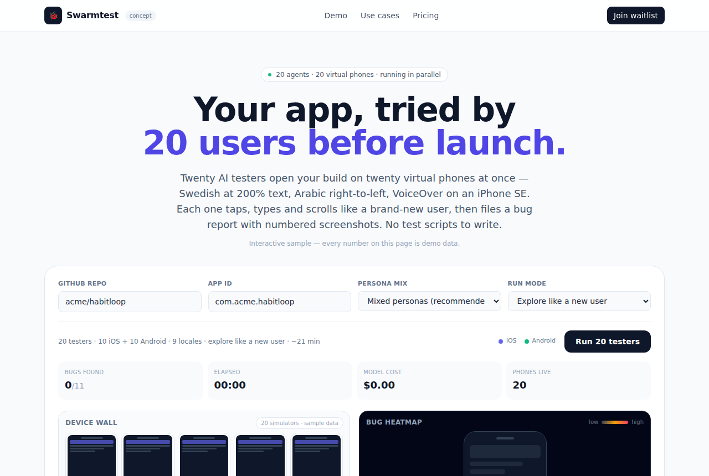

20 AI testers, 20 phones, one free GitHub runner
pierridotite/mobile-agent-testers · Dev toolsMIT⭐ 2,457

What it is. pierridotite/mobile-agent-testers is an MIT-licensed GitHub Actions template that spins up 20 Claude Code agents on 20 iOS Simulators and Android emulators in parallel. Each agent role-plays a persona — iPhone SE in Swedish at the largest text size, Pixel 7 at 200%, iPad in German, Arabic RTL — opens your app, taps through it like a first-time user, and writes a bug report with numbered screenshots. No test scripts to author. It supports Flutter, React Native, Expo, native Kotlin/Swift, Kotlin Multiplatform, Capacitor and .NET MAUI.
Why it's taking off. It turns a demo into something teams can actually run today: clone the template, drop in a Claude token, trigger the workflow, and get a SUMMARY.md with findings. Per the README, the demo run found 9 of 11 deliberately planted bugs plus real issues nobody planted, for under $1 in model usage across four testers. Runs cost roughly $0.15–$0.55 per phone, and GitHub runners are free for public repos. The repo gained ~2.4k stars in nine days, which tracks with how visual and shareable the output is.
Where the product opportunity is. The template stops at a repo and a CI log. A hosted layer above it — connect once, pick devices and locales, get a shareable dashboard with clustered bugs, dedupe across runs, and regression diffs between builds — is the obvious paid product. The hard sell is trust: false positives from screenshot-reading models will decide whether teams keep it in their release loop.
Today's top 5
| # | Repo | Buzz | Startup | Overall |
|---|---|---|---|---|
| 1 | pierridotite/mobile-agent-testers | 8.67 | 8.15 | 7.36 |
| 2 | Moh4696/inkworks-skill | 8.0 | 6.05 | 7.13 |
| 3 | valentderah/totk-pc-recomp | 8.33 | 5.6 | 7.0 |
| 4 | nexu-io/opengame | 7.33 | 6.5 | 6.97 |
| 5 | Avaneesh-Inamdar/Stream-Tube-Desktop | 7.67 | 6.15 | 6.65 |